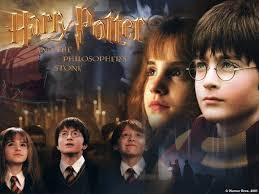
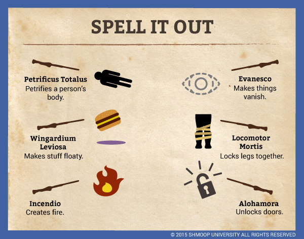

Harry Potter and the chamber of secrets
Harry Potter and the Chamber of Secrets is a 2002 fantasy film directed by Chris Columbus and distributed by Warner Bros. Pictures.[2] It is based on the novel of the same name by J. K. Rowling. The film is a sequel to the 2001 film Harry Potter and the Philosopher's Stone and the second instalment in the Harry Potter film series. It was written by Steve Kloves and produced by David Heyman. Its story follows Harry Potter's second year at Hogwarts School of Witchcraft and Wizardry as the Heir of Salazar Slytherin opens the Chamber of Secrets, unleashing a monster that petrifies the school's denizens. The film stars Daniel Radcliffe as Harry Potter, with Rupert Grint as Ron Weasley, and Emma Watson as Hermione Granger and is also the last film to feature Richard Harris as Professor Albus Dumbledore, due to his death that same year.
Plot
Harry Potter spends the summer with The Dursleys without receiving letters from his Hogwarts friends. In his room, Harry meets Dobby, a house-elf, who warns him of a peril that will take shape if he returns to Hogwarts, and reveals he intercepted his friends' letters, and destroys a cake. The Dursleys lock Harry up, but Ron, Fred and George Weasley rescue him in their father's flying car.
While purchasing school supplies, Harry and the Weasley family encounter Rubeus Hagrid and Hermione Granger, and they attend a book-signing by celebrity wizard Gilderoy Lockhart, who announces that he will be the new Defence Against the Dark Arts teacher. During a small confrontation with Draco Malfoy, Harry meets his father, Lucius, who slips a book in Ginny Weasley's belongings. When Harry and Ron are blocked from entering Platform Nine and Three-Quarters, they fly to Hogwarts in the flying car, crashing into the Whomping Willow upon arrival. Ron's wand is damaged, and the car ejects them before driving off. Both boys narrowly avoid expulsion when Professor McGonagall gives them detention.
While serving detention with Lockhart, Harry hears strange voices and later finds caretaker Argus Filch's cat, Mrs. Norris, petrified, along with a message written in blood announcing the "Chamber of Secrets has been opened". McGonagall explains that one of Hogwarts' founders, Salazar Slytherin, supposedly constructed a secret Chamber and placed a monster that only his Heir can control inside it, to purge the school of impure-blooded wizards and witches. Harry and Ron suspect Malfoy is the Heir, so Hermione suggests that they question him while disguised using polyjuice potion. They utilize a disused bathroom haunted by a ghost, Moaning Myrtle, as their makeshift laboratory to brew the potion.

Harry suspects that potions teacher Severus Snape is trying to obtain the stone in order to return Voldemort to physical form.
After getting past the tasks, Harry discovers that it was Defence Against the Dark Arts teacher Professor Quirrell who was trying to claim the stone, and that Snape was protecting Harry all along. Quirrell removes his turban and reveals a weak Voldemort to be living on the back of his head. Through an enchantment placed by Professor Dumbledore, Harry finds himself in possession of the stone. Voldemort attempts to convince Harry to give him the stone by promising to bring his parents back from the dead. When Harry refuses, Quirrell attacks, but Harry's touch burns Quirrell's skin and reduces him to dust, killing him. When Harry gets back up, Voldemort's spirit rises from Quirrell's ashes and passes through Harry, knocking him unconscious.
Harry wakes up in the school's hospital wing with Dumbledore at his side. Dumbledore explains that the stone has been destroyed and that Ron and Hermione are both fine. Dumbledore also reveals how Harry was able to defeat Quirrel;, because when Harry's mother died to save him, her death gave Harry a love-based protection against Voldemort. Harry, Ron, and Hermione are rewarded with house points for their heroic performances, tying them for first place with Slytherin. However, Neville Longbottom is awarded 10 points for attempting to stop his friends, giving Gryffindor enough points to win the House Cup.
Popular Spells
